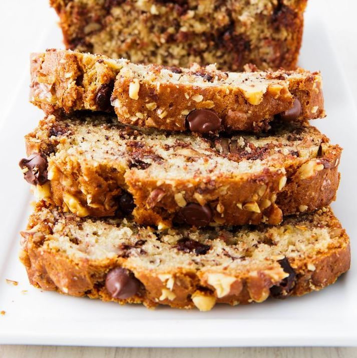
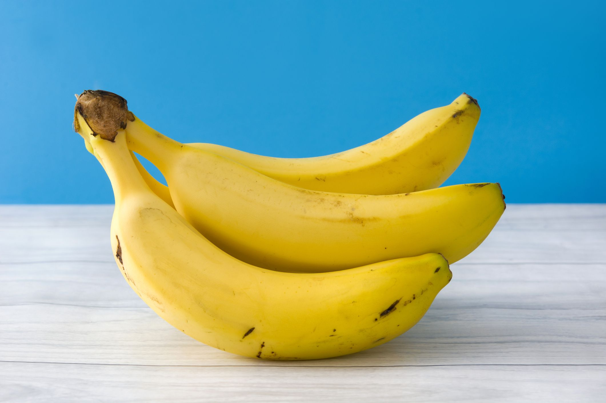
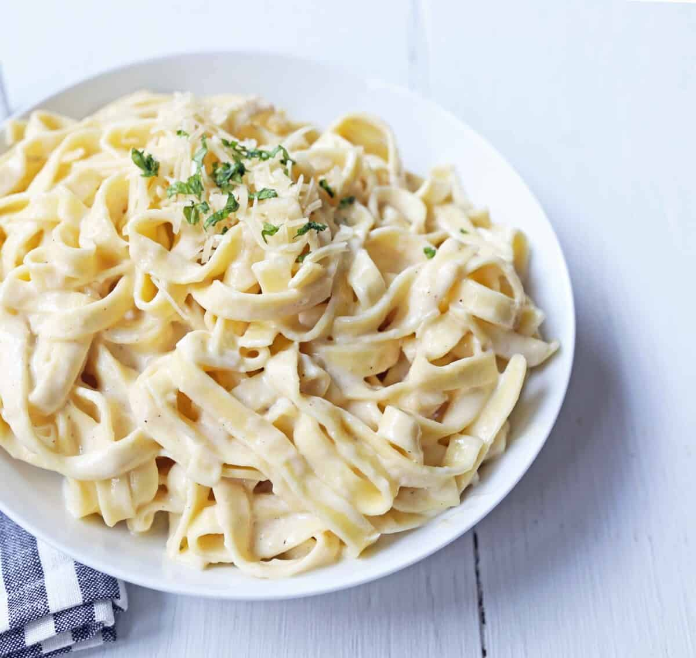

Recipes
Double Chocolate Cookies

- Origin: Michigan
- Source: Family Recipe
- Category: Dessert
My daughter learned to make these cookies at a baking camp at Zingermanns and has tweaked the recipe to fit the taste buds of her siblings. They are extremely sugary so the salt helps to balance it. Note, these cookies are best eaten very quickly.
Recipe Ingredients
- Unsalted butter
- Granulated Sugar
- Packed light or dark brown sugar
- Large egg
- Pure vanilla extract
- Semi-sweet chocolate chunks (melted)
- All-purpose flour
- Natural unsweetened cocoa powder
- Baking soda
- Salt
- Semi-sweet chocolate chunks

Chocolate Chip Banana Bread
- Origin: America
- Source: Delish.com
- Category: Dessert
This is a tried-and-tested recipe that I have used numerous times for making the perfect chocolate chip banana bread! Not only does it help utilize the bananas that have slowly overripened at the back of the fridge, it ends up creating an incredibly delicious, and relatively healthy, dessert.
Recipe Ingredients
- Cooking spray
- 2 cups (240 g) all-purpose flour
- 1 tsp. baking soda
- 1/2 tsp. kosher salt
- 1 large egg plus 1 egg yolk
- 1 cup (200 g) granulated sugar
- 1/2 cup (1 stick) unsalted butter, melted
- 1/4 cup sour cream
- 1 tsp. pure vanilla extract
- 3 ripe bananas, mashed
- 1/2 cup chopped toasted walnuts
- 1/2 cup semisweet chocolate chips

Recipe Steps
- Preheat the oven to 350º. Line a 9"-by-5" loaf pan with parchment and grease with cooking spray.
- In a medium bowl, whisk flour, baking soda, and salt.
- In a large bowl, mix egg, egg yolk, granulated sugar, butter, sour cream, and vanilla. Add bananas and stir until combined. Gradually add dry ingredients to banana mixture until just combined.
- Fold in walnuts and chocolate chips and transfer to prepared pan.
- Bake bread until a tester inserted into the center comes out clean, about 1 hour. Let cool 10 minutes in pan, then invert onto a wire rack and let cool completely.
Fettucine Alfredo
- Origin: Italy
- Source: Modernhoney.com
- Category: Main Dish
There are certain recipes that are essential to have in your recipe box and one of them has to be a phenomenal Fettuccine alfredo recipe. Years ago, when I was teaching kids’ cooking classes, this was one of the first things I taught them. Almost every single kid around goes crazy for alfredo sauce! It is so easy to make a homemade alfredo sauce that you will never buy the jarred variety again!
This homemade alfredo sauce is made with simple ingredients — butter, parmesan cheese, garlic, heavy cream, and salt. It’s a 5-ingredient alfredo sauce that is beyond easy!
Recipe Ingredients
- 1 lb Fettuccine Pasta
- 6 Tablespoons Butter
- 1 Garlic Clove (minced)
- 1 1/2 cups Heavy Cream
- 1/4 teaspoon Salt
- 1 1/4 cup Shredded Parmesan Cheese
- 1/4 teaspoon Pepper
- 2 Tablespoons Italian Parsley (optional)

Recipe Steps
- In a large pot, heat water over high heat until boiling. Add salt to season the water. Once it is boiling, add fettuccine and cook according to package instructions.
- In a large skillet or pan, heat butter over medium heat. Add minced garlic and cook for 1 to 2 minutes. Stir in heavy cream.
- Let heavy cream reduce and cook for 5 to 8 minutes. Add half of the parmesan cheese to the mixture and whisk well until smooth. Keep over heat and whisk well until cheese is melted.
- Save some pasta water. The pasta water is full of flavor and can be used to thin out the sauce.
- Toss alfredo sauce with fettuccine pasta and add half of the parmesan cheese. Once it is tossed, garnish with the remaining parmesan cheese. Add a little pasta water if it needs to be thinned out.
- Garnish with Italian parsley, if so desired.